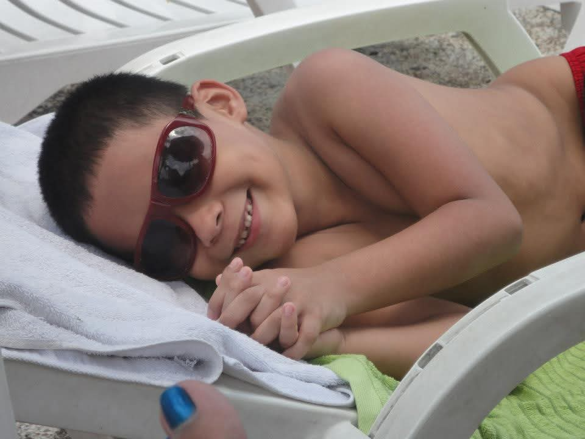
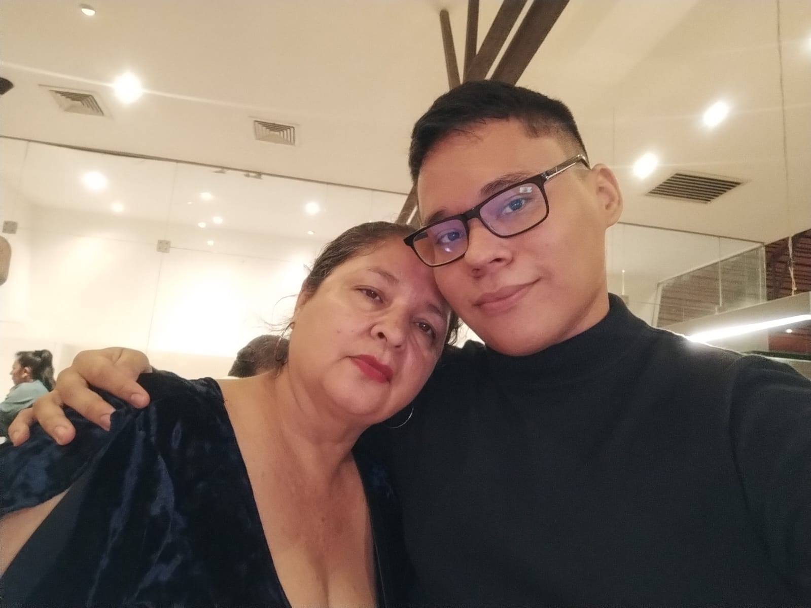
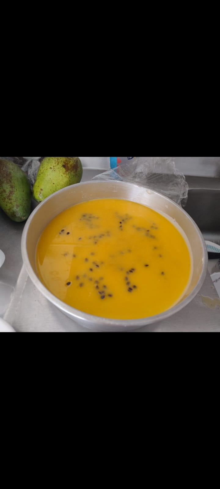
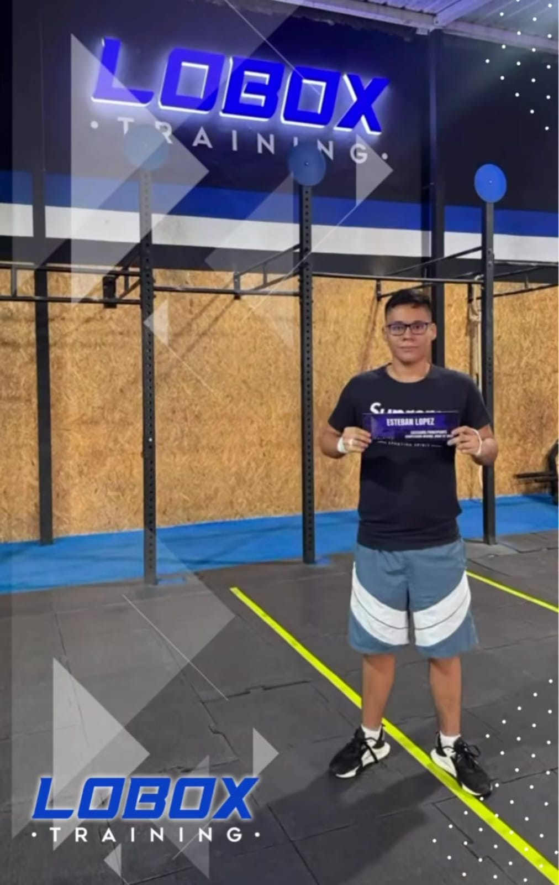
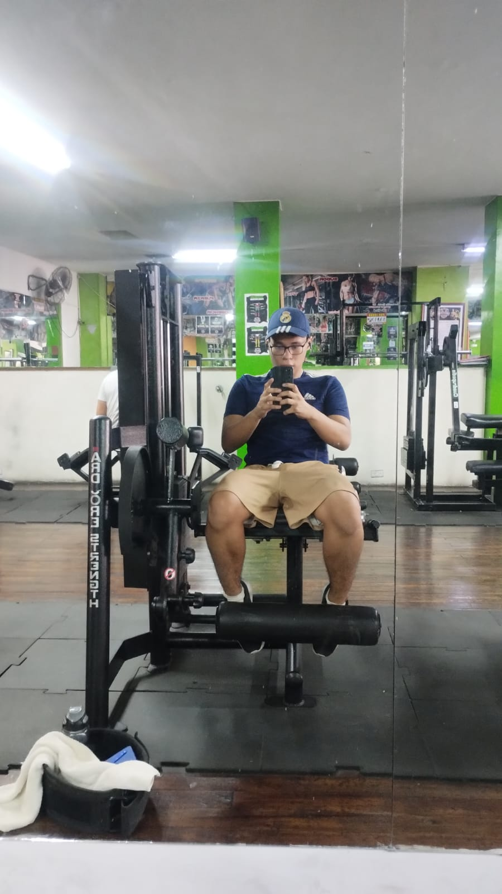

Administración de Proyectos · 2026
Mi proyecto de vida
Un journey personal a través del tiempo, las ideas y los sueños de quien soy y quien quiero ser.
01 · Autobiografía
Puedo listar a las personas que han tenido mayor influencia en mi vida como las siguientes.
De mi familia, mis padres (Ana y Norberto), mi hermano (Jhon), mi hermana (Jimena) y mi tío (Alex) han sido pilares fundamentales en mi formación como ser humano, aportándome a lo largo de mi vida los valores que siento que me definen: responsabilidad, respeto, trabajo duro y honradez. Mis padres, sobre todo, han sido el ejemplo más cercano de lo que es ser un adulto responsable, trabajador y honesto, enseñándome con su ejemplo la importancia de estos valores, aún cuando las cosas son difíciles.
También han sido una gran influencia mis amigos más cercanos. Aunque nunca he sido la persona más extrovertida, he tenido el privilegio de forjar amistades muy profundas y significativas, desde el colegio hasta la universidad, entre las que se encuentran Juan José y Mishell. Aunque ninguno de los dos se encuentra en el país, me han enseñado la importancia de la amistad, el apoyo mutuo y la lealtad. Además de eso, cada persona que he conocido en estos últimos años en la universidad también me ha mostrado la importancia de la conexión humana y de disfrutar las pequeñas cosas junto a los demás.
Por último, Tres figuras moldearon mi camino hacia la dirección que tomó hoy: el profesor William, quien fomentó mi encanto por las matemáticas y las ciencias brindándome siempre un espacio para desarrollarme más allá de lo que permitía un simple currículo; el divulgador Javier Santaolalla, quien me enganchó a un mundo que amo tanto como muchos de mis otros hobbies: la física teórica, y una figura que cambió mi perspectiva de muchas de las cosas que ocurren día a día en el mundo, el Teacher Daniel, profesor de Inglés en mí colegio.
Siento que desde pequeño manifesté muchos de los intereses que mantengo ahora como adulto. Recuerdo que siempre estuve fascinado por el espacio, muchas noches me quedaba mirando fijamente al cielo en búsqueda de las pocas estrellas que lograba ver a través de la contaminación lumínica de Cali. Esa curiosidad me llevó a interesarme profundamente por la astronomía, y aunque nunca fui de esos niños que se aprenden todas las constelaciones de memoria, lo que sí recuerdo vividamente es cómo esa fascinación me llevaba a decirle a todo el mundo que de grande iba a ser astronauta.
Con los años, ese interés fue evolucionando: el espacio fue cediendo terreno a la física de partículas, que siempre me ha parecido un gran misterio. Siento que me ayuda a comprender los fenómenos más fundamentales del mundo, y tiene un componente matemático pesado que siempre me ha gustado, porque algo que me caracteriza es que los retos me atraen. Este interés en la física de lo microscópico, fusionado con las enseñanzas del profesor William durante mi técnico de electrónica y la libertad de experimentar con dispositivos electrónicos a mi antojo, fue lo que finalmente me llevó al mundo de la ingeniería electrónica.
Otro interés que se volvió uno de mis grandes hobbies es la música. Fue influenciado en gran parte por mihermano Jhon, que toca guitarra y desde pequeño me enseñó, y también por mi amigo Juan José, con quien en el colegio retomé la guitarra y me adentré en el mundo del rock y la guitarra eléctrica, incluso formamos una banda que, aunque no duró mucho, fue una experiencia que recuerdo con mucho cariño.
Por último, el deporte también ha ocupado una buena parte de mi vida, aunque por épocas lo dejo de lado. Desde pequeño jugé mucho al fútbol, para el que soy pésimo, pero me divierte bastante, y practiqué natación, deporte en el que llegué a competir en algunas ocasiones, ganando medallas. Actualmente, aunque una lesión me ha tenido apartado por unos meses, también he competido en Crossfit, que me gusta mucho porque integra un deporte que amo: la halterofilia. Siempre me ha gustado esa sensación de darlo todo, estar al límite y poder crecer.
Hay tres experiencias que siento que me han marcado profundamente y que han moldeado en gran medida quién soy hoy.
La primera fue haber entrado en octavo grado a la Tecnoacademia del SENA, un espacio donde enseñaban a niños y jóvenes sobre electrónica, robótica, nanociencias y muchas otras áreas. Fue mi primera puerta real al mundo de la investigación, y una que nunca se ha vuelto a cerrar: hoy sigo en ese camino a través de los semilleros de investigación de la universidad y de iniciativas como la IEEE. Entrar a la Tecnoacademia a esa edad fue darme cuenta de que el conocimiento no tiene que quedarse en un salón de clases, y que hay un mundo enorme esperando a quien tenga la curiosidad de explorarlo.
La segunda ha sido la universidad. Más allá de lo académico, me ha puesto frente a retos, personas y situaciones que me han obligado a crecer de formas que no esperaba. Me ha enseñado a trabajar bajo presión, a colaborar, a fallar y a levantarme, y me ha confirmado que el camino que elegí, aunque difícil, es el que quiero seguir.
La tercera, y quizás la más personal, fue la decisión de abrirme como persona durante el colegio. Siempre fui alguien más bien reservado, pero en algún momento decidí empezar a interactuar más con los demás, a explorar lo que sentía y a dejar de quedarme en mi zona de confort. Ese cambio transformó profundamente mi perspectiva y mi forma de ser, me enseñó el valor de la conexión humana y me mostró una versión de mí mismo que no sabía que existía.
Mis principales éxitos han estado ligados sobre todo a la investigación. Haber presentado ponencias sobre hidroponía y granjas verticales fue una experiencia que me enseñó muchísimo, no solo en lo académico sino en lo personal: aprendí a organizarme en función de un objetivo concreto, a trabajar en equipo, a ser proactivo, a dirigir personas y a entender cómo llegarles. También me formó mucho en algo que valoro bastante, que es la capacidad de exponer y transmitir conocimiento de forma clara, ya sea en una ponencia, en una clase o en cualquier otro espacio.
Mis mayores fracasos, curiosamente, no han tenido tanto que ver con lo académico sino con lo social. Muchas veces he fallado intentando relacionarme con los demás, conectar, integrarme. Pero con el tiempo me he dado cuenta de que cada uno de esos tropiezos me ha ido enseñando a entender cómo expresarme y cómo llegar a las personas, y poco a poco eso me ha abierto puertas que antes sentía cerradas.

Infancia
Con mamá
Postre que hice
Competencia Crossfit
En el gym02 · Diagnóstico Personal
Análisis DOFA
03 · Reflexión
Mi actitud ante la vida es una mezcla de varias cosas. Tiendo a ser realista, que es en parte la razón por la que no sigo activamente detrás de algunos sueños de infancia, pero eso no significa que dejé de soñar en grande. Simplemente aprendí a soñar con un plan detrás. Me gustaría en algún momento trabajar en el extranjero en un experimento de física, ya sea en nuevos métodos de generación de energía como la fusión nuclear, o en un colisionador de partículas como el LHC. Pero hoy estoy centrado en los objetivos a corto y mediano plazo: terminar la carrera, empezar a trabajar, hacer un posgrado y, si se da, un doctorado. También quiero obtener certificaciones en negocios, porque he identificado que en la ingeniería electrónica, más allá de lo técnico, saber emprender y valorar el propio trabajo marca una diferencia enorme.
Nunca me he caracterizado por rendirme fácilmente. Cuando algo sale mal, intento entender qué hice mal, aprendo de ello y sigo intentando hasta que sale. Me frustro, sí, pero me levanto rápido.
Desde pequeño mi familia me enseñó que el trabajo duro y el respeto son pilares para salir adelante, y eso se quedó grabado en mí. También me inculcaron la importancia de dar algo de vuelta a la comunidad, de hacer "patria", como se dice coloquialmente. Esos valores los vivo en la universidad cuando me niego a rendirme aunque pierda horas de sueño, cuando ayudo a mis compañeros sin hacerles el trabajo, y cuando me comprometo con cada proyecto que emprendo. La humildad, el compañerismo y la honradez también me definen, porque siento que no hay forma sostenible de crecer sin ellos.
Soy estudiante, y eso hoy ocupa gran parte de mi identidad, pero no toda. Soy hijo de Ana y Norberto, y en ese rol encuentro uno de mis mayores motores: quiero poder retribuirles todo lo que han dado por mí. Soy hermano de Jhon y Jimena, con quienes compartí una infancia que me formó. Soy amigo, aunque de pocos y con mucha profundidad, y me enorgullece poder sostener esas amistades incluso a distancia. Soy guitarrista, no profesional, pero la música es un espacio que siempre ha sido mío. Soy investigador, un rol que tomé desde los catorce años en la Tecnoacademia y que sigo construyendo hoy en los semilleros y en la IEEE. Soy deportista, aunque ahora en pausa forzada. Y soy, cada vez más, un líder en formación.
04 · El Proceso
El punto de partida fue mirar hacia atrás. Revisar de dónde vengo, quiénes me formaron y qué experiencias me dejaron huella. No fue un proceso lineal ni ordenado, sino más bien el ejercicio de alguien que no suele hablar mucho de sí mismo pero que, cuando se sienta a hacerlo, tiene bastante que decir. Pensar en mi familia, en el profesor William, en la Tecnoacademia, en Juan José y Mishell, fue recordar que no llegué hasta aquí solo.
La parte más exigente fue ser honesto. Reconocer que, que la procrastinación y el perfeccionismo me frenan con más frecuencia de lo que quisiera, o que tiendo a procesar mis problemas en solitario en lugar de apoyarme en los demás, no es fácil de poner por escrito. Pero también encontré fortalezas por las que muchas veces no me doy credito del todo: la curiosidad que me ha acompañado desde niño, la capacidad de liderar y enseñar, y un propósito que, aunque a veces se pierde entre el ruido de las muchas cosas en las que estoy metido, sigue siendo claro.
Para el DOFA intenté ser igual de honesto hacia afuera que hacia adentro. Mis fortalezas están atadas a la investigación, al liderazgo y a unos valores que me enseñaron desde casa. Las oportunidades las veo en los semilleros, en la IEEE y en cada iniciativa donde puedo crecer y conectar con otros. Las debilidades más relevantes son las que ya reconozco: la dispersión, la dificultad para pedir ayuda y los hábitos físicos que quiero retomar. Y las amenazas más reales son el contexto del país, que ya se llevó a personas cercanas, y mi propia tendencia a cerrarme cuando debería abrirme.
Al juntar todo, lo que emerge es un perfil bastante coherente: alguien que creció curioso, que encontró en la ciencia y la ingeniería un lenguaje propio, que valora profundamente a las pocas personas que tiene cerca, y que tiene un propósito claro aunque todavía está construyendo el camino para cumplirlo. El diagnóstico no reveló nada que no supiera de alguna manera, pero sí me obligó a articularlo, y eso tiene un valor distinto.
"Soy una persona con más claridad de la que a veces me doy crédito. Sé de dónde vengo, sé lo que me mueve y sé, en términos generales, hacia dónde quiero ir. Lo que me falta no es dirección, sino aprender a confiar más en el proceso, en los demás, y en mí mismo."
05 · El Sueño
El problema que quiero abordar es doble: por un lado, quiero contribuir al avance del conocimiento desde la investigación en ingeniería electrónica, un campo donde siento que tengo mucho por aportar y donde ya llevo años construyendo una base sólida. Por otro, quiero aprender a convertir ese conocimiento técnico en algo sostenible, emprendiendo y creando valor real. No concibo uno sin el otro: investigar sin aplicar se queda corto, y emprender sin rigor técnico se queda vacío. Mi proyecto de vida pasa por encontrar el punto donde esos dos caminos se cruzan.
06 · Propósito
Misión
"Soy un ingeniero en formación que busca usar el conocimiento técnico y científico como herramienta de impacto real. Me muevo entre la investigación, el aprendizaje constante y el servicio a los demás, con la convicción de que crecer no tiene sentido si no se hace algo útil con ello. Trabajo duro, me levanto cuando fallo y trato de dejar algo mejor en cada espacio por el que paso."
Visión
"En diez años me veo como un ingeniero electrónico con posgrado, ojalá doctorado, que ha tenido la oportunidad de trabajar en proyectos de frontera, ya sea en energía, física aplicada o tecnología con propósito. Quiero haber podido apoyar a mi familia, haber contribuido a que otros accedan a educación de calidad, y seguir siendo alguien que no dejó de aprender ni de intentarlo."
07 · El Plan
Graduarme como ingeniero electrónico en 2027 y vincularme activamente al mundo investigativo y profesional, para iniciar un posgrado en ingeniería aplicada o investigación antes de 2029, medido por la obtención del título, al menos una publicación o ponencia presentada, y mi admisión a un programa de maestría o doctorado.
Consolidar mi perfil investigativo y obtener experiencia profesional
Graduarme y sentar las bases para el posgrado
Iniciar el posgrado y desarrollar una iniciativa de emprendimiento